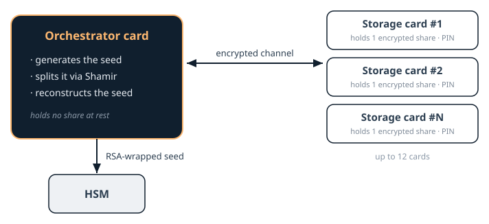

Overview
The cryptnox-shamir system is a hardware-backed scheme for splitting,
distributing, and recovering a single high-value secret across a set of
smart cards, using Shamir’s Secret Sharing.
A secret is split into n shares and written to n smart cards. Any
k of those cards (the threshold) can reconstruct the secret; any k-1
of them reveal nothing — not partial information, nothing. This is the
mathematical guarantee of Shamir’s scheme.
Who this is for
This documentation targets institutional custodians of cryptographic secrets, for example:
Corporate Bitcoin treasuries protecting the private key (or the HSM wrapping key) that controls cold-storage funds.
Funds and exchanges that need quorum-based, auditable control over a master key, with no single point of compromise.
Any organisation subject to a “no single person can move the funds” control requirement, where
kofficers out ofnmust cooperate.
The typical goal is a disaster-recovery backup of a key that normally lives inside a Hardware Security Module (HSM): the live key stays in the HSM, and the Shamir cards are the offline, geographically distributed backup that can restore it if the HSM is lost or destroyed.
Why hardware
A purely software implementation of Shamir’s scheme exposes the secret in the memory of the machine that splits or reconstructs it. The Cryptnox system moves the sensitive operations onto the cards:
The seed is generated, split, and reconstructed inside the orchestrator card. The host PC never sees it in plaintext.
Each share is stored inside a storage card, encrypted, and protected by a PIN. A stolen card reveals nothing without the PIN, and one share alone is useless.
Shares move card-to-card over an encrypted channel. The host only relays opaque ciphertext.
Supported hardware
Cryptnox Orchestrator card — performs all cryptography (1 required).
Cryptnox Storage cards — hold one encrypted share each (2 to 12).
A contact PC/SC smart card reader. Contactless / NFC is not supported — both applets reject it.
Order card sets through the Shamir Secret Sharing Cards page; readers are at shop.cryptnox.com.
What you get
A command-line tool,
shamir-cli, that drives the entire lifecycle: ceremony, backup test, and recovery.Guided, interactive workflows that prompt you to insert and swap cards.
A pure-software Shamir mode for testing the maths without hardware.
At a glance


Fig. 1 The orchestrator splits the seed across the storage cards over an encrypted channel, and exports the seed RSA-wrapped to the HSM.
Next steps
New to the scheme? Read Concepts.
Ready to install? See Installation.
Running your first ceremony? See The Ceremony.
See also
Security Model — the threat model, for risk and compliance teams.
Choosing Parameters — choosing the
k-of-nquorum for your policy.